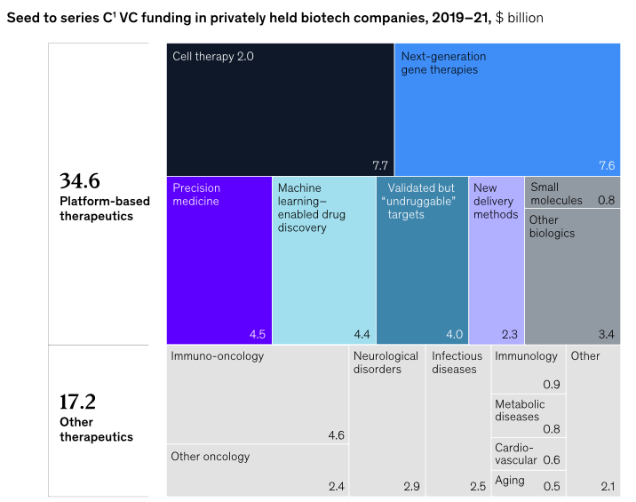

Billions poured into anti-aging life sciences research; where to invest? - a guide
Thinking about investing in longevity? This is 101 to get you a headstart.

Longevity and anti-aging are two of the most promising and rapidly growing industries of our time. Advances in biotechnology and healthcare are making it increasingly possible to extend the human lifespan and improve the quality of life for people as they age. These developments have attracted significant attention and investment from venture capitalists and angel investors, but not all of them may have a sophisticated biotech background. So, why should they care about this industry?
The first reason is that the anti-aging product and service market is projected to increase in the coming years. According to a report from Research and Markets, the global anti-aging market is expected to reach $331 billion by 2024, growing at a CAGR of 6.5% during the forecast period. This presents a significant opportunity for investors to profit from the growth of this market. The second reason is that the research and development of anti-aging technologies can significantly impact society by addressing some of our most pressing health challenges, such as age-related diseases. By investing in companies developing these technologies, angel investors can make a financial return and contribute to developing solutions that could improve the lives of millions of people worldwide.
Additionally, it's worth mentioning that other organizations are also investing heavily in research on aging and health span. For example, the Saudi royal family has started the Hevolution Foundation, a not-for-profit organization that plans to spend up to $1 billion per year of its oil wealth supporting basic research on the biology of aging and finding ways to extend the number of years people live in good health. This fund, managed by Mehmood Khan, a former Mayo Clinic endocrinologist and the onetime chief scientist at PepsiCo, could make Saudi Arabia the largest single sponsor of researchers attempting to understand the underlying causes of aging—and how it might be slowed down with drugs.
It is important to note that aging is not just about time span but about how each organ deteriorates and mental diseases contribute to cognitive decline. Kidney malfunction and bone deterioration cause the homeostasis body and the skeleton to decline, respectively. The reason companies focused on research and developing anti-aging technologies are focused on combating diseases and chronic conditions and improving quality of life and stress reduction mechanisms. The ventures that address these issues are critical to extending the human lifespan and improving the quality of life as we age.

Are you still reading? Interested in exploring scientific research? Head to the blog about the LongevityAI app - a personal consultant to answer questions for you! Keep reading part II if you are up for a challenge to know everything about how MBS and Bezos plan to spend Billions on living forever.